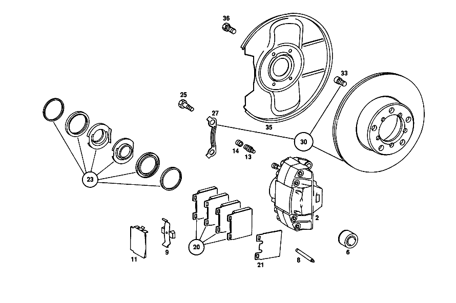

| № | Артикул | Название | Кол. | Примечание | Ограничение |
|---|---|---|---|---|---|
| 2 | A 001 421 81 98 | Тормозной суппорт | 1 | LEFT;TEVES;LESS LINING; IN PAIRS OPTIONAL с | |
| 6 | A 000 421 35 83 | - Поршень | 4 | ||
| 8 | A 000 991 03 60 | - Фиксирующий штифт | 4 | ||
| 9 | A 000 421 02 91 | - Разжимная пружина | 2 | ||
| 11 | A 000 421 02 20 | - Щиток | 2 | ||
| 13 | A 000 420 17 55 | - Клапан выпуска воздуха | 2 | ||
| 14 | A 000 421 71 87 | - КОЛПАЧОК | - | ||
| 14 | A 000 421 08 87 | - Защитный колпачок | 2 | ||
| 20 | A 001 420 77 20 | К-т тормозных колодок | 1 | К\-Т ДЕТАЛЕЙ | |
| 23 | A 000 586 64 42 | ремкомплект | 2 | ||
| 25 | A 115 421 04 71 | болт | 4 | ||
| 27 | A 115 994 07 32 | Стопорная шайба | 2 | ||
| 30 | A 115 421 11 12 | Тормозной диск | 2 | [004] UP TO CHASSIS: 021 007085 022 017599 | |
| 33 | A 000 990 72 12 | Винт с цил.гол./6-гр. | 10 | ||
| 35 | A 114 421 00 20 | Щиток | 2 | ||
| 36 | N 000933 006122 | Винт | - | ||
| 36 | N 304017 006034 | Винт с 6-гранной головкой | 6 | ||
| 50 | A 123 420 05 83 | Тормозной суппорт | 1 | LEFT;TEVES;LESS LINING; IN PAIRS OPTIONAL с [009] 017 033477, AUSSERDEM EINGEBAUT IN: 023 010233, WITH RATIO 1:3,69 010241, WITH RATIO 1:3,92 | |
| 55 | A 000 423 36 83 | - Поршень | 4 | TEVES | |
| 56 | A 000 991 03 60 | - Фиксирующий штифт | 4 | TEVES | |
| 57 | A 000 421 17 91 | - Разжимная пружина | 2 | TEVES | |
| 58 | A 000 420 19 55 | - Клапан выпуска воздуха | 2 | 7\-MM THREAD,TEVES | |
| 59 | A 000 421 71 87 | - КОЛПАЧОК | - | ||
| 59 | A 000 421 08 87 | - Защитный колпачок | 2 | ||
| 65 | A 001 586 73 43 | ремкомплект | 2 | TEVES | |
| 68 | A 001 420 06 20 | К-т тормозных колодок | 1 | К\-Т ДЕТАЛЕЙ | |
| 69 | A 000 423 00 61 | Демпфирование | 4 | [073] ТОЛЬКО ПРИ ПИСКЕ ТОРМОЗОВ | |
| 70 | A 123 423 00 71 | болт | 4 | ||
| 71 | A 115 428 17 40 | ДЕРЖАТЕЛЬ | 1 | СЗАДИ СЛЕВА [020] FROM CHASSIS: 021 005144 022 012572 [022] UP TO CHASSIS: 023 010232 072 006166 073 002975 | |
| 75 | N 000137 006204 | Пружинная шайба | 2 | [020] FROM CHASSIS: 021 005144 022 012572 [022] UP TO CHASSIS: 023 010232 072 006166 073 002975 | |
| 77 | N 000933 006122 | Винт | - | ||
| 77 | N 304017 006034 | Винт с 6-гранной головкой | 2 | [020] FROM CHASSIS: 021 005144 022 012572 [022] UP TO CHASSIS: 023 010232 072 006166 073 002975 | |
| 84 | A 115 423 02 73 | Стопорная шайба | 2 | [024] UP TO CHASSIS: 023 101138 072 103808 073 107257 | |
| 85 | A 126 423 00 12 | Тормозной диск | 2 | ||
| 88 | A 115 420 35 44 | Щиток | 1 | тормоз заднего колеса,LEFT | |
| 90 | A 115 423 32 20 | Щиток | 2 | [027] FOR SUBSEQUENT INSTALLATION IN CASE OF BAD ROAD CONDITIONS | |
| 91 | N 007981 004233 | Шуруп | - | ||
| 91 | N 000000 000460 | Шуруп | 4 | 4.8X13 [027] FOR SUBSEQUENT INSTALLATION IN CASE OF BAD ROAD CONDITIONS | |
| 92 | A 115 427 00 60 | УПЛОТНИТ. КОЛЬЦО | 2 | [402] БОЛЬШЕ НЕ ПОСТАВЛЯЕТСЯ [025] UP TO CHASSIS: 021 005460 022 013552 | |
| 95 | A 115 427 03 96 | Манжета | 2 | COVER PLATE TO TRANSVERSE CONTROL ARM [028] FROM CHASSIS: 021 005461 022 013553 | |
| 98 | A 123 423 00 06 | Кронштейн торм. механизма | 2 | ТОРМОЗН. КОЛОДКА | |
| 98 | A 123 423 01 06 | КРОНШТЕЙН | 2 | ТОРМОЗН. КОЛОДКА | |
| 98 | A 123 423 02 06 | КРОНШТЕЙН | 2 | ТОРМОЗН. КОЛОДКА | |
| 99 | A 123 990 03 12 | болт | 4 | BRAKE SHOE SUPPORT TO TRANSVERSE CONTROL ARM | |
| 100 | A 126 420 01 20 | Тормозная колодка | 1 | ||
| 102 | A 108 420 01 20 | - ТОРМОЗН. КОЛОДКА | - | [417] БОЛЬШЕ НЕ ПОСТАВЛЯЕТСЯ, ЗАКАЗЫВАТЬ КОМПЛЕКТ ПОСТАВКИ | |
| 103 | A 108 423 00 92 | - пружина | 4 | ||
| 103D | A 108 423 01 92 | - пружина | - | ||
| 103D | A 910 993 13 10 | - ПРУЖИНА | 2 | ||
| 103L | A 108 423 06 92 | - пружина | 2 | ||
| 104 | A 123 420 00 73 | Болт, особая форма | 2 | ||
| 105 | A 116 423 00 50 | втулка | 2 | ||
| 110 | A 114 586 01 42 | РЕМКОМПЛЕКТ | - | ЗАМОК НАТЯЖНОЙ [412] БОЛЬШЕ НЕ ПОСТАВЛЯЕТСЯ, ЗАКАЗЫВАТЬ ОТДЕЛЬНЫЕ ДЕТАЛИ [065] FROM CHASSIS: 023 100735 072 103035 073 105294 | |
| 116 | A 123 420 63 28 | Провод | 1 | СЛЕВА [409] ПРИ МОНТАЖЕ ПОДОГНАТЬ ПО МЕСТУ [030] UP TO CHASSIS: 021 005143 022 012571 | |
| 130 | A 001 430 66 30 | Аппарат тормозной системы | 1 | ||
| 130 | A 001 430 36 30 | УСИЛИТЕЛЬ ТОРМ. ПРИВОДА | 1 | BENDIX | |
| 137 | A 002 430 28 01 | Главный цилиндр | 1 | ||
| 137 | A 003 430 22 01 | Главный цилиндр | 1 | BENDIX | |
| 139 | A 004 997 32 45 | - Уплотнительное кольцо | 1 | ||
| 142 | A 001 586 93 43 | ремкомплект | 1 | TEVES | |
| 145 | A 001 431 42 02 | Бак | 1 | TEVES, THREE\-CHAMBER Рулевое управление: Влево [059] FROM CHASSIS: 072: 10/50,12/52 101115 073: 10/50,12/52 100966 [061] FROM CHASSIS: 023 100233 | |
| 145 | A 001 431 42 02 | Бак | 1 | Рулевое управление: Вправо | |
| 147 | A 000 431 09 35 | СОЕДИНИТЕЛЬ | 1 | ||
| 149 | A 000 431 54 33 | Запорная крышка | 1 | [059] FROM CHASSIS: 072: 10/50,12/52 101115 073: 10/50,12/52 100966 [061] FROM CHASSIS: 023 100233 [056] FROM CHASSIS: 072: 20/60,22/62 101586 073: 20/60,22/62 101485 | |
| 150 | A 000 997 29 40 | - Уплотнительное кольцо | 1 | ||
| 152 | A 000 431 16 33 | Колпачок | 2 | TEVES [402] БОЛЬШЕ НЕ ПОСТАВЛЯЕТСЯ | |
| 155 | A 001 542 63 17 | Ремк-т датчика уровня | 1 | TEVES, FRONT | |
| 156 | A 000 431 75 60 | - Уплотнение | 2 | ||
| 157 | A 000 431 82 60 | - уплотнение | 2 | ||
| 159 | A 000 431 43 34 | Сетка | 1 | TEVES | |
| 160 | A 000 431 00 62 | Брызгозащитная панель | 1 | TEVES [060] UP TO CHASSIS: 023 100232 [055] UP TO CHASSIS: 072: 20/60,22/62 101585 073: 20/60,22/62 101484 [058] UP TO CHASSIS: 072: 10/50,12/52 101114 073: 10/50,12/52 100965 | |
| 161 | A 115 431 01 80 | уплотнение | 1 | ||
| 162 | N 000137 008204 | Пружинная шайба | - | ||
| 162 | N 000137 008212 | Пружинная шайба | 4 | ||
| 163 | N 000934 008010 | Гайка | - | ||
| 163 | N 304032 008006 | Шестигранная гайка | 4 | M8 | |
| 168 | N 000137 008204 | Пружинная шайба | - | ||
| 168 | N 000137 008212 | Пружинная шайба | 1 | ||
| 169 | N 000934 008010 | Гайка | - | ||
| 169 | N 304032 008006 | Шестигранная гайка | 1 | M8 | |
| 170 | N 000933 008153 | Винт | - | M8X25\-8.8 | |
| 170 | N 304017 008034 | Винт с 6-гранной головкой | 1 | M8X25 [034] FROM CHASSIS: 021 005603 022 013887 | |
| 171 | A 115 291 03 50 | втулка | 1 | [034] FROM CHASSIS: 021 005603 022 013887 | |
| 174 | A 108 430 15 29 | Провод | 1 | ВПУСКН. КОЛЛЕКТОР К ТОРМ. БЛОКУ Рулевое управление: Влево | |
| 180 | A 123 420 54 28 | Провод | 1 | FROM MASTER CYLINDER TO FRONT LEFT BRAKE HOSE; 4.75X0.7X300 MM Рулевое управление: Влево [409] ПРИ МОНТАЖЕ ПОДОГНАТЬ ПО МЕСТУ | |
| 182 | A 123 420 68 28 | Провод | 1 | FROM MASTER CYLINDER TO FRONT RIGHT BRAKE HOSE; 4.75 X 0.7 X 1290 MM Рулевое управление: Влево [409] ПРИ МОНТАЖЕ ПОДОГНАТЬ ПО МЕСТУ | |
| 185 | A 123 420 78 28 | Провод | 1 | FROM BRAKE MASTER CYLINDER TO DISTRIBUTOR; 4.75 X 0.7 X 2790 MM Рулевое управление: Влево [409] ПРИ МОНТАЖЕ ПОДОГНАТЬ ПО МЕСТУ [030] UP TO CHASSIS: 021 005143 022 012571 | |
| 187 | A 121 429 01 34 | 6-гр. распорный элемент | 1 | M10 Рулевое управление: Вправо | |
| 188 | A 001 997 14 81 | резиновая втулка | 2 | ||
| 192 | A 120 420 02 27 | Т-образный винт | 1 | ||
| 193 | A 000 987 38 41 | КОЛЬЦО РЕЗИНОВОЕ | 1 | ||
| 194 | A 000 428 42 24 | Распределитель | 1 | [020] FROM CHASSIS: 021 005144 022 012572 | |
| 196 | A 094 990 68 10 | Пружинное кольцо | 1 | ||
| 197 | N 000934 006007 | Гайка | 1 | ||
| 203 | N 007976 006204 | Шуруп | 1 | [020] FROM CHASSIS: 021 005144 022 012572 | |
| 208 | A 123 420 53 28 | Провод | 1 | ОТ РАСПРЕДЕЛИТ.К ТОРМОЗ.ШЛАНГУ СЗАДИ СЛЕВА; 4.75X0.7X260 MM [409] ПРИ МОНТАЖЕ ПОДОГНАТЬ ПО МЕСТУ [020] FROM CHASSIS: 021 005144 022 012572 [053] FROM CHASSIS: 023 010502 072 007461 073 004688 | |
| 212 | A 123 420 64 28 | Провод | 1 | ОТ РАСПРЕДЕЛИТ.К ТОРМОЗ.ШЛАНГУ СЗАДИ СПРАВА [409] ПРИ МОНТАЖЕ ПОДОГНАТЬ ПО МЕСТУ [020] FROM CHASSIS: 021 005144 022 012572 [053] FROM CHASSIS: 023 010502 072 007461 073 004688 | |
| 214 | A 126 328 01 81 | Резиновая опора | 5 | Рулевое управление: Влево | |
| 214 | A 126 328 01 81 | Резиновая опора | 8 | Рулевое управление: Вправо | |
| 215 | A 108 995 05 20 | хомут | 8 | ||
| 218 | A 115 995 01 01 | ХОМУТ | 2 | Рулевое управление: Влево | |
| 219 | A 111 476 00 81 | Резиновая вставка | 4 | Рулевое управление: Вправо | |
| 220 | A 108 546 02 53 | РАСПОРН. ТРУБКА | 1 | [402] БОЛЬШЕ НЕ ПОСТАВЛЯЕТСЯ | |
| 220 | A 108 546 02 53 | РАСПОРН. ТРУБКА | 2 | Рулевое управление: Вправо [402] БОЛЬШЕ НЕ ПОСТАВЛЯЕТСЯ | |
| 224 | A 123 428 05 35 | Тормозной шланг | 2 | СПЕРЕДИ | |
| 225 | A 000 428 26 35 | Тормозной шланг | 2 | СЗАДИ [030] UP TO CHASSIS: 021 005143 022 012571 | |
| 230 | A 000 428 06 73 | Удерживающая пружина | 4 | ||
| 250 | A 116 420 03 84 | Стояночный тормоз | 1 | Рулевое управление: Влево | |
| 254 | A 115 427 07 86 | - Упорное кольцо | 1 | Рулевое управление: Влево | |
| 260 | A 116 430 00 93 | - пружина | 1 | Рулевое управление: Влево | |
| 268 | A 115 427 08 86 | Упорный буфер | 1 | Рулевое управление: Влево | |
| 272 | N 000125 006421 | Шайба | 2 | Рулевое управление: Влево | |
| 272 | N 000125 006449 | Шайба | 2 | Рулевое управление: Влево | |
| 273 | N 000137 006204 | Пружинная шайба | 1 | Рулевое управление: Влево | |
| 281 | N 000934 006013 | Гайка | - | Рулевое управление: Влево | |
| 281 | N 304032 006008 | Шестигранная гайка | 2 | НОЖНОЙ СТОЯНОЧ. ТОРМОЗ НА ПЕРЕГОРОДКЕ Рулевое управление: Влево | |
| 282 | A 094 990 68 10 | Пружинное кольцо | 2 | НОЖНОЙ СТОЯНОЧ. ТОРМОЗ НА ПЕРЕГОРОДКЕ Рулевое управление: Влево | |
| 283 | A 115 427 00 79 | Уплотнительная прокладка | 1 | НОЖНОЙ СТОЯНОЧ. ТОРМОЗ НА ПЕРЕГОРОДКЕ Рулевое управление: Влево | |
| 284 | N 000931 006084 | Винт | - | Рулевое управление: Влево | |
| 284 | N 304017 006027 | Винт с 6-гранной головкой | 1 | FOOT OPERATED PARKING BRAKE TO INSTRUMENT PANEL; M6X45 Рулевое управление: Влево | |
| 285 | N 009021 007200 | Шайба | 1 | FOOT OPERATED PARKING BRAKE TO INSTRUMENT PANEL Рулевое управление: Влево | |
| 286 | A 094 990 68 10 | Пружинное кольцо | 1 | FOOT OPERATED PARKING BRAKE TO INSTRUMENT PANEL Рулевое управление: Влево | |
| 294 | A 115 420 07 68 | КРОНШТЕЙН | 1 | Рулевое управление: Вправо [402] БОЛЬШЕ НЕ ПОСТАВЛЯЕТСЯ | |
| 295 | A 115 420 12 12 | РЫЧАГ ТОРМОЗА | 1 | Рулевое управление: Вправо [402] БОЛЬШЕ НЕ ПОСТАВЛЯЕТСЯ | |
| 296 | A 110 427 00 50 | - ВТУЛКА | 1 | Рулевое управление: Вправо | |
| 300 | A 115 420 03 82 | БОЛТ | 1 | Рулевое управление: Вправо [402] БОЛЬШЕ НЕ ПОСТАВЛЯЕТСЯ | |
| 301 | N 000933 008131 | Винт | - | Рулевое управление: Вправо | |
| 301 | N 304017 008016 | Винт с 6-гранной головкой | 1 | M8X16 Рулевое управление: Вправо | |
| 302 | N 912004 008102 | Пружинное кольцо | 1 | Рулевое управление: Вправо | |
| 305 | A 115 427 18 89 | Язычок | 1 | Рулевое управление: Вправо | |
| 306 | N 001434 008070 | Палец | 1 | Рулевое управление: Вправо [402] БОЛЬШЕ НЕ ПОСТАВЛЯЕТСЯ | |
| 310 | A 115 420 10 88 | ТЯГА ЗАЩЕЛКИ | 1 | Рулевое управление: Вправо [402] БОЛЬШЕ НЕ ПОСТАВЛЯЕТСЯ | |
| 311 | N 001434 008070 | Палец | 1 | Рулевое управление: Вправо [402] БОЛЬШЕ НЕ ПОСТАВЛЯЕТСЯ | |
| 313 | A 115 427 06 86 | Упорное кольцо | 1 | Рулевое управление: Вправо | |
| 316 | A 123 420 03 95 | Ручка | 1 | Рулевое управление: Вправо | |
| 318 | A 115 420 07 86 | ДЕРЖАТЕЛЬ | 1 | Рулевое управление: Вправо | |
| 320 | A 115 427 06 40 | болт | 1 | Рулевое управление: Вправо | |
| 321 | N 900055 016001 | Пружинная шайба | 1 | Рулевое управление: Вправо | |
| 322 | N 000931 006084 | Винт | - | Рулевое управление: Вправо | |
| 322 | N 304017 006027 | Винт с 6-гранной головкой | 1 | M6X45 Рулевое управление: Вправо | |
| 323 | N 009021 007200 | Шайба | 1 | Рулевое управление: Вправо | |
| 324 | A 094 990 68 10 | Пружинное кольцо | 1 | Рулевое управление: Вправо | |
| 328 | N 000934 006013 | Гайка | - | Рулевое управление: Вправо | |
| 328 | N 304032 006008 | Шестигранная гайка | 3 | BRAKE LEVER ASSEMBLY TO FIRE WALL Рулевое управление: Вправо | |
| 329 | A 094 990 68 10 | Пружинное кольцо | 3 | BRAKE LEVER ASSEMBLY TO FIRE WALL Рулевое управление: Вправо | |
| 335 | A 115 990 45 40 | ШАЙБА | - | Рулевое управление: Вправо | |
| 335 | A 631 267 02 76 | ШАЙБА | 1 | LEVER ASSEMBLY TO FRONT PANEL PILLAR, RIGHT INSIDE Рулевое управление: Вправо | |
| 335 | A 004 990 25 82 | Диск | 1 | LEVER ASSEMBLY TO FRONT PANEL PILLAR, RIGHT INSIDE Рулевое управление: Вправо | |
| 336 | N 912004 008102 | Пружинное кольцо | 1 | LEVER ASSEMBLY TO FRONT PANEL PILLAR, RIGHT INSIDE Рулевое управление: Вправо | |
| 337 | N 000933 008131 | Винт | - | Рулевое управление: Вправо | |
| 337 | N 304017 008016 | Винт с 6-гранной головкой | 1 | LEVER ASSEMBLY TO FRONT PANEL PILLAR, RIGHT INSIDE; M8X16 Рулевое управление: Вправо | |
| 340 | N 000912 005002 | Винт | 1 | Рулевое управление: Вправо | |
| 341 | N 007980 005001 | Пружинное кольцо | 1 | Рулевое управление: Вправо | |
| 350 | A 115 420 16 85 | Тормозной трос | 1 | Рулевое управление: Влево | |
| 353 | A 115 420 19 85 | ТРОС. ПРИВОД СТОЯН. ТОРМ. | 1 | Рулевое управление: Вправо | |
| 356 | A 116 427 00 96 | Манжета | 1 | ||
| 358 | A 115 427 00 95 | Защитный шланг | 2 | Рулевое управление: Влево | |
| 358 | A 115 427 00 95 | Защитный шланг | 1 | Рулевое управление: Вправо | |
| 359 | A 115 993 03 25 | пружина | 1 | ||
| 360 | N 073379 006100 | Шланг | 1 | ||
| 364 | A 115 995 02 10 | хомут | NB | ||
| 365 | A 120 420 02 27 | Т-образный винт | 2 | ||
| 366 | A 000 987 38 41 | КОЛЬЦО РЕЗИНОВОЕ | 2 | ||
| 367 | A 094 990 68 10 | Пружинное кольцо | 2 | ||
| 368 | N 000934 006013 | Гайка | - | ||
| 368 | N 304032 006008 | Шестигранная гайка | 2 | ||
| 370 | A 315 995 50 10 | хомут | 1 | Рулевое управление: Вправо | |
| 371 | A 120 420 02 27 | Т-образный винт | 2 | Рулевое управление: Вправо | |
| 372 | A 094 990 68 10 | Пружинное кольцо | 2 | Рулевое управление: Вправо | |
| 373 | N 000934 006013 | Гайка | - | Рулевое управление: Вправо | |
| 373 | N 304032 006008 | Шестигранная гайка | 2 | Рулевое управление: Вправо | |
| 375 | A 115 420 12 42 | Рычаг торм.механизма | 1 | ||
| 376 | A 115 993 03 30 | - пружина | 1 | ||
| 379 | A 115 420 10 89 | СЕРЬГА | 1 | ||
| 382 | A 115 427 06 71 | - болт | 1 | ||
| 383 | A 115 427 09 74 | Палец | 1 | ||
| 386 | A 115 993 27 10 | пружина | 1 | ||
| 390 | A 115 420 27 85 | Тормозной трос | 2 | [065] FROM CHASSIS: 023 100735 072 103035 073 105294 | |
| 391 | N 070614 010010 | Винт | - | ||
| 391 | N 000933 010162 | Винт | 2 | ||
| 392 | N 000137 010205 | Пружинная шайба | 2 | ||
| A 001 421 02 98 | СКОБА ТОРМОЗН. МЕХАНИЗМА | - | [001] UP TO CHASSIS: 021 008133 022 020272 | ||
| A 001 421 03 98 | СКОБА ТОРМОЗН. МЕХАНИЗМА | - | [001] UP TO CHASSIS: 021 008133 022 020272 | ||
| A 001 421 82 98 | Тормозной суппорт | 1 | RIGHT,TEVES,LESS LINING; IN PAIRS OPTIONAL с | ||
| A 001 421 73 98 | СКОБА ТОРМОЗН. МЕХАНИЗМА | 1 | LEFT,BENDIX,LESS LINING; IN PAIRS OPTIONAL с | ||
| A 001 421 74 98 | СКОБА ТОРМОЗН. МЕХАНИЗМА | 1 | RIGHT,BENDIX,LESS LINING; IN PAIRS OPTIONAL с | ||
| A 000 421 44 83 | - Поршень | 4 | |||
| A 000 991 18 60 | - ШТИФТ | - | |||
| A 000 991 26 60 | - Фиксирующий штифт | 4 | |||
| A 000 421 12 91 | - Разжимная пружина | 4 | [417] БОЛЬШЕ НЕ ПОСТАВЛЯЕТСЯ, ЗАКАЗЫВАТЬ КОМПЛЕКТ ПОСТАВКИ | ||
| A 000 421 02 73 | - ПРЕДОХРАНИТЕЛЬ | - | |||
| A 000 421 05 73 | - предохранитель | 2 | TO 000 991 18 60 | ||
| A 000 421 03 73 | - ПРЕДОХРАНИТЕЛЬ | - | |||
| A 000 421 05 73 | - предохранитель | 2 | TO 000 991 18 60 | ||
| A 000 421 05 73 | - предохранитель | 4 | TO 000 991 26 60 | ||
| A 000 421 05 20 | - Щиток | 2 | |||
| A 000 420 46 55 | - Клапан выпуска воздуха | 2 | [001] UP TO CHASSIS: 021 008133 022 020272 | ||
| A 001 420 77 20 | К-т тормозных колодок | 1 | К\-Т ДЕТАЛЕЙ | ||
| A 000 421 00 96 | Демпфирование | 4 | [073] ТОЛЬКО ПРИ ПИСКЕ ТОРМОЗОВ | ||
| A 001 586 00 42 | набор уплотнений | 2 | MAKE "BENDIX" | ||
| A 115 421 13 12 | Тормозной диск | 2 | [006] FROM CHASSIS: 021 007086 022 017600 | ||
| A 094 990 68 10 | Пружинное кольцо | 6 | |||
| A 000 423 31 98 | СКОБА ТОРМОЗН. МЕХАНИЗМА | - | |||
| A 000 423 58 98 | СКОБА ТОРМОЗН. МЕХАНИЗМА | - | [008] UP TO CHASSIS: 023 010232, WITH RATIO 1:3,69 010240, WITH RATIO 1:3,92 [016] 017 033477, AUSSERDEM EINGEBAUT IN: 072 000001-006166, WITH RATIO 1:3,69 000004-000612, WITH RATIO 1:3,92 [017] 017 033477, AUSSERDEM EINGEBAUT IN: 073 000296-002975, WITH RATIO 1:3,69 000296-003036, WITH RATIO 1:3,92 | ||
| A 000 423 32 98 | СКОБА ТОРМОЗН. МЕХАНИЗМА | - | |||
| A 000 423 34 98 | СКОБА ТОРМОЗН. МЕХАНИЗМА | - | [012] UP TO CHASSIS: 072 000003 073 000295 | ||
| A 000 423 59 98 | СКОБА ТОРМОЗН. МЕХАНИЗМА | - | [008] UP TO CHASSIS: 023 010232, WITH RATIO 1:3,69 010240, WITH RATIO 1:3,92 [016] 017 033477, AUSSERDEM EINGEBAUT IN: 072 000001-006166, WITH RATIO 1:3,69 000004-000612, WITH RATIO 1:3,92 [017] 017 033477, AUSSERDEM EINGEBAUT IN: 073 000296-002975, WITH RATIO 1:3,69 000296-003036, WITH RATIO 1:3,92 | ||
| A 123 420 06 83 | Тормозной суппорт | 1 | RIGHT,TEVES,LESS LINING; IN PAIRS OPTIONAL с [009] 017 033477, AUSSERDEM EINGEBAUT IN: 023 010233, WITH RATIO 1:3,69 010241, WITH RATIO 1:3,92 | ||
| A 000 420 46 55 | - Клапан выпуска воздуха | 2 | 8\-MM THREAD | ||
| A 123 420 07 83 | СКОБА ТОРМОЗН. МЕХАНИЗМА | - | |||
| A 126 420 14 83 | СКОБА ТОРМОЗН. МЕХАНИЗМА | 1 | LEFT,BENDIX,LESS LINING; IN PAIRS OPTIONAL с | ||
| A 123 420 08 83 | СКОБА ТОРМОЗН. МЕХАНИЗМА | - | |||
| A 126 420 15 83 | СКОБА ТОРМОЗН. МЕХАНИЗМА | 1 | RIGHT,BENDIX,LESS LINING; IN PAIRS OPTIONAL с | ||
| A 000 423 35 83 | - Поршень | 4 | BENDIX | ||
| A 000 421 13 91 | - Разжимная пружина | 4 | BENDIX | ||
| A 000 991 19 60 | - ШТИФТ | - | |||
| A 000 991 26 60 | - Фиксирующий штифт | 4 | BENDIX | ||
| A 000 421 02 73 | - ПРЕДОХРАНИТЕЛЬ | - | |||
| A 000 421 05 73 | - предохранитель | 4 | BENDIX TO 000 991 19 60 | ||
| A 000 421 05 73 | - предохранитель | 4 | BENDIX TO 000 991 26 60 | ||
| A 001 586 01 42 | РЕМКОМПЛЕКТ | 2 | BENDIX | ||
| A 115 428 18 40 | ДЕРЖАТЕЛЬ | 1 | СЗАДИ СПРАВА [020] FROM CHASSIS: 021 005144 022 012572 [022] UP TO CHASSIS: 023 010232 072 006166 073 002975 [402] БОЛЬШЕ НЕ ПОСТАВЛЯЕТСЯ | ||
| A 115 420 12 44 | ЗАЩИТНАЯ ПАНЕЛЬ | - | [025] UP TO CHASSIS: 021 005460 022 013552 | ||
| A 115 420 13 44 | ЗАЩИТНАЯ ПАНЕЛЬ | - | [025] UP TO CHASSIS: 021 005460 022 013552 | ||
| A 115 420 36 44 | Щиток | 1 | тормоз заднего колеса,RIGHT | ||
| N 000933 006122 | Винт | - | |||
| N 304017 006034 | Винт с 6-гранной головкой | 4 | |||
| A 094 990 68 10 | Пружинное кольцо | 4 | |||
| A 116 420 00 20 | - ТОРМОЗН. КОЛОДКА | - | [402] БОЛЬШЕ НЕ ПОСТАВЛЯЕТСЯ [417] БОЛЬШЕ НЕ ПОСТАВЛЯЕТСЯ, ЗАКАЗЫВАТЬ КОМПЛЕКТ ПОСТАВКИ | ||
| A 114 586 00 42 | РЕМКОМПЛЕКТ | - | [064] UP TO CHASSIS: 023 100734 072 103034 073 105293 | ||
| A 115 420 11 89 | Разжимной механ. тормоза | 2 | |||
| A 108 427 00 74 | Цилиндрический шрифт | 2 | SEE FIG. NO.103D SEE FIG. NO.103L | ||
| A 123 420 50 28 | Провод | 1 | 180 MM; 4.75X0.7X180 MM [409] ПРИ МОНТАЖЕ ПОДОГНАТЬ ПО МЕСТУ [020] FROM CHASSIS: 021 005144 022 012572 [022] UP TO CHASSIS: 023 010232 072 006166 073 002975 | ||
| A 123 420 63 28 | Провод | 1 | СПРАВА [409] ПРИ МОНТАЖЕ ПОДОГНАТЬ ПО МЕСТУ [030] UP TO CHASSIS: 021 005143 022 012571 | ||
| A 123 420 50 28 | Провод | 1 | 180 MM; 4.75X0.7X180 MM [409] ПРИ МОНТАЖЕ ПОДОГНАТЬ ПО МЕСТУ [020] FROM CHASSIS: 021 005144 022 012572 [022] UP TO CHASSIS: 023 010232 072 006166 073 002975 | ||
| A 000 431 29 87 | - КОЛПАЧОК | 1 | |||
| A 000 431 29 87 | - КОЛПАЧОК | 1 | TEVES [067] UP TO CHASSIS: 023 101041 072 103609 073 106619 | ||
| A 001 586 41 43 | ремкомплект | 1 | BENDIX | ||
| A 001 586 41 43 | ремкомплект | 1 | TEVES [067] UP TO CHASSIS: 023 101041 072 103609 073 106619 | ||
| A 001 586 55 43 | РЕМКОМПЛЕКТ | 1 | BENDIX | ||
| A 001 431 42 02 | Бак | 1 | BENDIX | ||
| A 000 431 43 34 | - Сетка | 1 | |||
| A 000 431 54 33 | - Запорная крышка | 1 | BENDIX | ||
| A 000 431 97 60 | - УПЛОТНИТ. КОЛЬЦО | 1 | BENDIX | ||
| A 000 431 57 02 | БАЧОК | - | |||
| A 000 431 64 02 | БАЧОК | - | [054] 021,022 UNTIL PRODUCTION STOP [060] UP TO CHASSIS: 023 100232 | ||
| A 000 431 64 02 | БАЧОК | - | Рулевое управление: Вправо [055] UP TO CHASSIS: 072: 20/60,22/62 101585 073: 20/60,22/62 101484 | ||
| A 002 542 99 17 | Датчик уровня | 1 | MAKE TEVES,REAR [060] UP TO CHASSIS: 023 100232 [055] UP TO CHASSIS: 072: 20/60,22/62 101585 073: 20/60,22/62 101484 [058] UP TO CHASSIS: 072: 10/50,12/52 101114 073: 10/50,12/52 100965 | ||
| A 000 431 75 60 | Уплотнение | 2 | |||
| A 094 295 01 00 | болт | - | |||
| A 115 295 01 72 | Эксцентриковая гайка | 1 | [032] UP TO CHASSIS: 021 005602 022 013886 | ||
| A 114 430 09 29 | ПРОВОД | 1 | ВПУСКН. КОЛЛЕКТОР К ТОРМ. БЛОКУ Рулевое управление: Вправо [402] БОЛЬШЕ НЕ ПОСТАВЛЯЕТСЯ | ||
| A 123 420 71 28 | Провод | 1 | FROM MASTER CYLINDER TO FRONT LEFT BRAKE HOSE; 4.75X0.7X1590 MM Рулевое управление: Вправо [409] ПРИ МОНТАЖЕ ПОДОГНАТЬ ПО МЕСТУ | ||
| A 123 420 54 28 | Провод | 1 | FROM MASTER CYLINDER TO FRONT RIGHT BRAKE HOSE; 4.75X0.7X300 MM Рулевое управление: Вправо [409] ПРИ МОНТАЖЕ ПОДОГНАТЬ ПО МЕСТУ | ||
| A 123 420 87 28 | Провод | 1 | FROM BRAKE MASTER CYLINDER TO DISTRIBUTOR; 4.75X0.7X3660 MM Рулевое управление: Влево [409] ПРИ МОНТАЖЕ ПОДОГНАТЬ ПО МЕСТУ [020] FROM CHASSIS: 021 005144 022 012572 | ||
| A 123 420 66 28 | Провод | 1 | FROM MASTER CYLINDER TO COUPLING Рулевое управление: Вправо [409] ПРИ МОНТАЖЕ ПОДОГНАТЬ ПО МЕСТУ | ||
| A 123 420 74 28 | Провод | 1 | FROM COUPLING TO REAR DISTRIBUTOR Рулевое управление: Вправо [409] ПРИ МОНТАЖЕ ПОДОГНАТЬ ПО МЕСТУ [030] UP TO CHASSIS: 021 005143 022 012571 | ||
| A 123 420 83 28 | Провод | 1 | FROM COUPLING TO REAR DISTRIBUTOR Рулевое управление: Вправо [409] ПРИ МОНТАЖЕ ПОДОГНАТЬ ПО МЕСТУ [020] FROM CHASSIS: 021 005144 022 012572 | ||
| A 000 428 41 24 | Распределитель | 1 | [402] БОЛЬШЕ НЕ ПОСТАВЛЯЕТСЯ [030] UP TO CHASSIS: 021 005143 022 012571 | ||
| N 007976 006303 | Шуруп | 1 | [020] FROM CHASSIS: 021 005144 022 012572 | ||
| A 115 428 00 41 | хомут | 1 | [020] FROM CHASSIS: 021 005144 022 012572 | ||
| A 123 420 55 28 | Провод | 1 | ОТ РАСПРЕДЕЛИТ.К ТОРМОЗ.ШЛАНГУ СЗАДИ СЛЕВА [409] ПРИ МОНТАЖЕ ПОДОГНАТЬ ПО МЕСТУ [030] UP TO CHASSIS: 021 005143 022 012571 | ||
| A 115 420 24 28 | ПРОВОД | - | [052] UP TO CHASSIS: 023 010501 072 007460 073 004687 | ||
| A 123 420 66 28 | Провод | 1 | ОТ РАСПРЕДЕЛИТ.К ТОРМОЗ.ШЛАНГУ СЗАДИ СПРАВА [409] ПРИ МОНТАЖЕ ПОДОГНАТЬ ПО МЕСТУ [030] UP TO CHASSIS: 021 005143 022 012571 | ||
| A 115 420 25 28 | ПРОВОД | - | [052] UP TO CHASSIS: 023 010501 072 007460 073 004687 | ||
| A 120 420 02 27 | Т-образный винт | 4 | Рулевое управление: Влево | ||
| A 120 420 02 27 | Т-образный винт | 5 | Рулевое управление: Вправо | ||
| A 000 987 38 41 | КОЛЬЦО РЕЗИНОВОЕ | 4 | Рулевое управление: Влево | ||
| A 000 987 38 41 | КОЛЬЦО РЕЗИНОВОЕ | 5 | Рулевое управление: Вправо | ||
| A 094 990 68 10 | Пружинное кольцо | 4 | Рулевое управление: Влево | ||
| A 094 990 68 10 | Пружинное кольцо | 5 | Рулевое управление: Вправо | ||
| N 000934 006013 | Гайка | - | Рулевое управление: Влево | ||
| N 304032 006008 | Шестигранная гайка | 4 | Рулевое управление: Влево | ||
| N 304032 006008 | Шестигранная гайка | 5 | Рулевое управление: Вправо | ||
| A 100 995 00 42 | ХОМУТ | - | Рулевое управление: Вправо | ||
| A 111 995 00 42 | ХОМУТ | - | Рулевое управление: Вправо | ||
| A 140 995 02 22 | хомут | 4 | Рулевое управление: Вправо | ||
| N 007976 005205 | Шуруп | 3 | |||
| N 000125 006421 | Шайба | 2 | Рулевое управление: Влево | ||
| N 000125 006449 | Шайба | 2 | Рулевое управление: Влево | ||
| A 126 328 01 81 | Резиновая опора | 1 | |||
| A 108 995 05 20 | хомут | 1 | |||
| N 000933 006122 | Винт | - | |||
| N 304017 006034 | Винт с 6-гранной головкой | 1 | |||
| A 094 990 68 10 | Пружинное кольцо | 1 | |||
| N 000934 006007 | Гайка | 1 | |||
| A 116 428 01 35 | ТОРМОЗНОЙ ШЛАНГ | - | |||
| A 126 428 01 35 | Тормозной шланг | 2 | |||
| A 115 420 07 84 | СТОЯНОЧНЫЙ ТОРМОЗ | - | Рулевое управление: Влево [039] UP TO CHASSIS: 023 009980 072 004628 073 001469 | ||
| A 115 427 00 82 | - ЧЕХОЛ | 1 | Рулевое управление: Влево [402] БОЛЬШЕ НЕ ПОСТАВЛЯЕТСЯ [039] UP TO CHASSIS: 023 009980 072 004628 073 001469 | ||
| A 115 427 06 31 | ТЯГА | 1 | Рулевое управление: Влево [039] UP TO CHASSIS: 023 009980 072 004628 073 001469 | ||
| A 115 427 05 40 | БОЛТ | - | [043] UP TO CHASSIS: 023 009323 072 002193 073 000155 | ||
| N 006799 004001 | Стопорная шайба | 1 | Рулевое управление: Влево [039] UP TO CHASSIS: 023 009980 072 004628 073 001469 | ||
| A 110 820 08 92 | КНОПКА | 1 | Рулевое управление: Влево [039] UP TO CHASSIS: 023 009980 072 004628 073 001469 | ||
| N 000094 001503 | ШПЛИНТ | 1 | Рулевое управление: Влево | ||
| N 006797 012250 | Зубчатая шайба | 1 | Рулевое управление: Влево [043] UP TO CHASSIS: 023 009323 072 002193 073 000155 | ||
| A 000 990 07 51 | гайка | 1 | Рулевое управление: Влево | ||
| A 116 427 00 12 | Направл. втулка | 1 | Рулевое управление: Влево | ||
| A 116 427 00 73 | ПРЕДОХРАНИТЕЛЬ | 1 | Рулевое управление: Влево | ||
| N 000094 002059 | Шплинт | 1 | 2X14 MM Рулевое управление: Вправо | ||
| A 094 990 30 05 | Шплинт | 1 | 2,0X14 Рулевое управление: Вправо | ||
| N 000094 002059 | Шплинт | 1 | 2X14 MM Рулевое управление: Вправо | ||
| A 094 990 30 05 | Шплинт | 1 | 2,0X14 Рулевое управление: Вправо | ||
| A 115 993 03 25 | пружина | 1 | |||
| A 115 995 02 10 | хомут | 1 | Рулевое управление: Влево | ||
| N 007976 006203 | Шуруп | 2 | B6,3X13 Рулевое управление: Влево | ||
| N 910006 004043 | - Заклепка | 2 | |||
| N 000094 001503 | ШПЛИНТ | 1 | |||
| N 000094 003227 | Шплинт | 1 | |||
| A 115 993 03 25 | пружина | 2 | |||
| A 115 420 20 85 | ТРОС. ПРИВОД СТОЯН. ТОРМ. | - | [064] UP TO CHASSIS: 023 100734 072 103034 073 105293 [054] 021,022 UNTIL PRODUCTION STOP | ||
| A 115 420 26 85 | ТРОС. ПРИВОД СТОЯН. ТОРМ. | - | [064] UP TO CHASSIS: 023 100734 072 103034 073 105293 [054] 021,022 UNTIL PRODUCTION STOP |
Позиций: 312 · подписано на схемах: 181 · колесо — плавный зум в курсор, перетаскивание — пан, двойной клик — зум, клик по артикулу — скопировать.